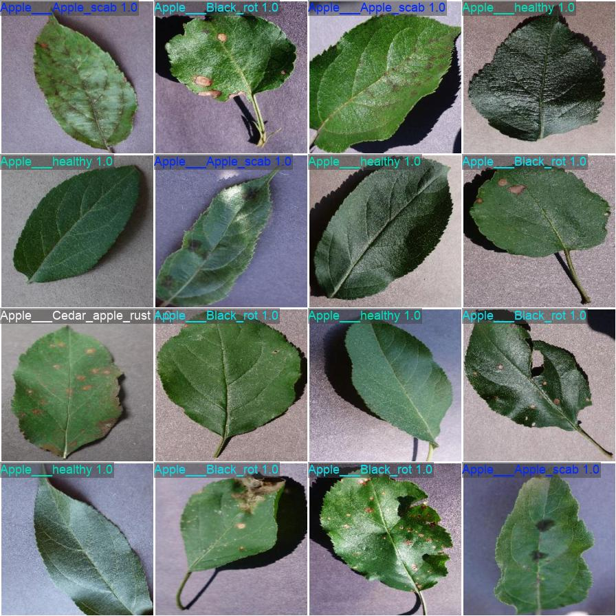
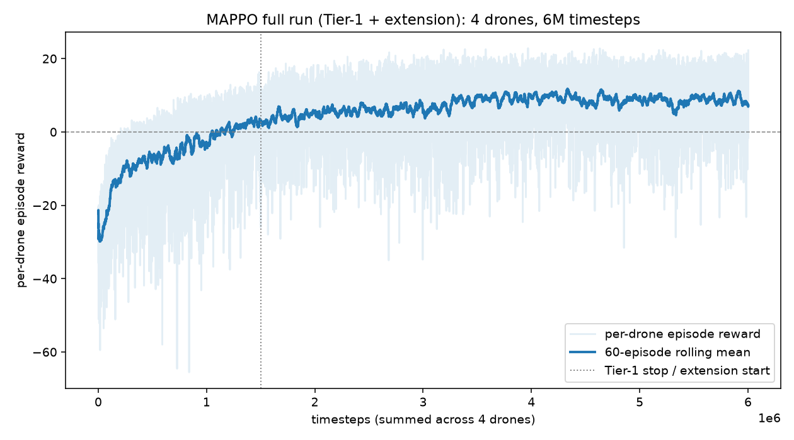
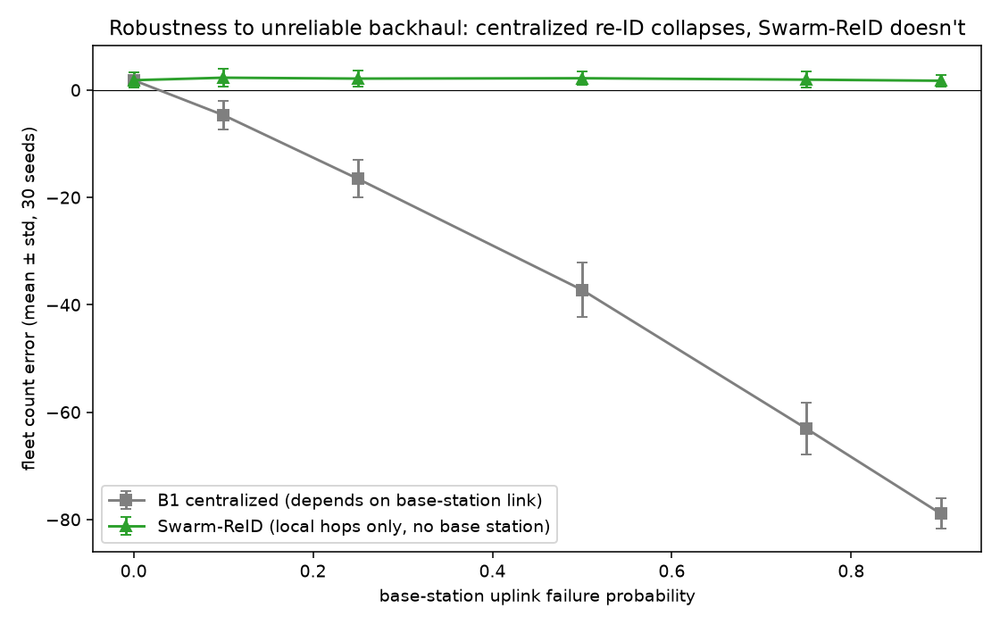
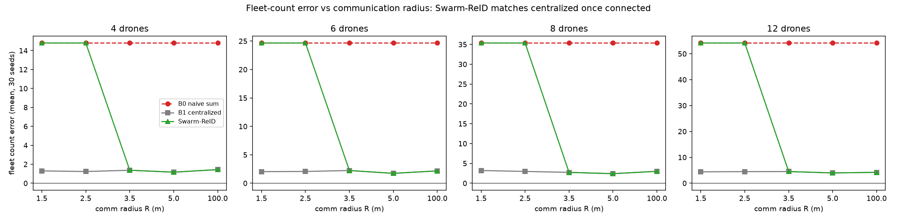

One drone counting is solved. A fleet is not.
Send one drone down one row of an orchard and fruit counting is a known recipe: detect, then track across frames so the same apple isn't counted in every frame it appears in. That part of this project works well — mAP50 0.961 on real photographs, tracking verified frame by frame.
Send a fleet, and a new failure mode opens up that single-camera counting never has to face: two drones on adjacent rows can each independently track the same tree at the row boundary. Sum their counts naively and that tree is counted twice — in simulated fleets here, naive summing overcounts by 25–45% depending on swarm size. The obvious fix, ship every observation to a base station and de-duplicate centrally, quietly assumes a working long-range radio link back to a fixed point — an assumption that gets worse, not better, the larger and more remote the field.
02Seeing the orchard, one drone at a time
YOLOv8n was fine-tuned on AppleBBCH81 — 1,838 real orchard photographs, dense foliage, natural occlusion, no staging — for 60 epochs in 12.4 minutes on a single T4. A bigger model was tried and rejected: YOLOv8s scored statistically identically (mAP50 0.962 vs 0.961) at 3.6× the size and over 2× the inference latency, so the small model stayed.
Counting itself is a tracking problem, not a detection problem: the same apple crosses many video frames. Wrapping the detector with ByteTrack collapses repeat sightings into one count per physical apple — the part of this project that behaves exactly like the well-understood single-camera case.

03A fleet that learns not to collide
Each drone learns, through reinforcement learning rather than hand-tuned control, to hold its row and steer clear of trees and teammates in a physics-simulated orchard. A shared-policy multi-agent PPO setup trained four drones for 6M timesteps; reward climbed from −30 to a converged plateau near +8, with zero collisions recorded in evaluation.

Said plainly, because this project doesn't dress up simulators as reality: that simulator renders trees as green cylinders on a checkerboard floor. It's the right tool for validating a control algorithm and the wrong tool for a picture of a farm — so it isn't presented as one here. The orchard photographs used for detection, not the navigation simulator, are what carry this project's visual claim to realism.
04Swarm-ReID: agreeing on a count without a hub
Multi-camera re-identification is a solved problem for fixed, wired security cameras. It has not been solved for a handful of aircraft that move, that lose contact with each other constantly, and that have no guaranteed link to anything at all — which is the actual operating condition of a field drone fleet.
The mechanism
Each drone turns its local ByteTrack entries into compact appearance embeddings, gossips those embeddings — not video, not raw images — to whichever teammates happen to be in radio range, gates candidate matches by GPS proximity before ever comparing appearance, and merges duplicates through a distributed union-find that no drone needs a central authority to update.
The unexpected finding
The first hypothesis was that gossiping instead of centralizing would cost fewer bits. Measured directly, it didn't — at these swarm sizes every drone already has a neighbour close enough that message counts come out tied. That null result is reported rather than quietly dropped, because chasing it down surfaced the result that actually matters: resilience, not bandwidth.

Centralized, 90% link loss
Swarm-ReID, same conditions

Recall even at full connectivity tops out around 0.90–0.92, not 1.0 — a real gap traced to the appearance-embedding threshold, not the coordination logic, and a concrete target rather than a claim of solved re-identification.
Built in the open, bugs included
A methods section that only shows the version that worked hides exactly the judgment a reader trying to reproduce it would need. A few of the real ones from this project's log:
- bugDuplicate entities placed 3m apart in their own simulation. Positions were rebuilt from each observing drone's own centerline instead of one shared true position — geolocation gating correctly, uselessly, rejected nearly every real match.
- fixEntity position computed once, estimated twice. Both observations now denoise the same true point independently — merges went from 1-in-19 to matching the centralized ceiling.
- bugReinforcement-learning training ran 3× slower with the machine otherwise idle. PyTorch was defaulting to sixteen threads to back-propagate a two-layer network smaller than the thread-scheduling overhead itself.
- fixCapped at four threads. Full speed returned immediately; the fix is one line.
Taken together, the project demonstrates that decentralized coordination isn't just a resilience nice-to-have for field robotics — it's the difference between a fleet that keeps counting correctly when the network degrades and one that silently loses nine trees in ten.